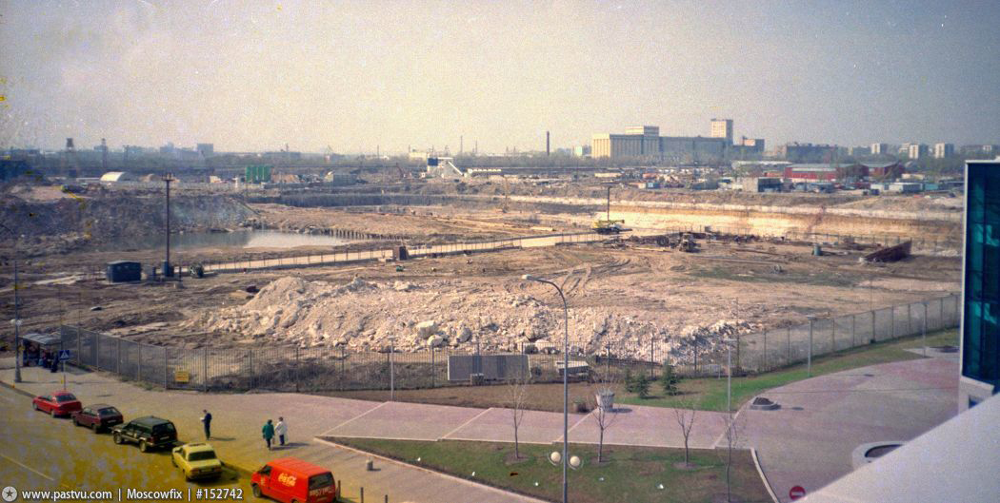
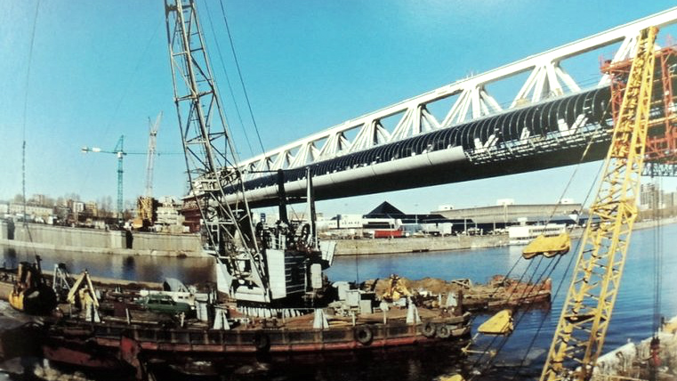
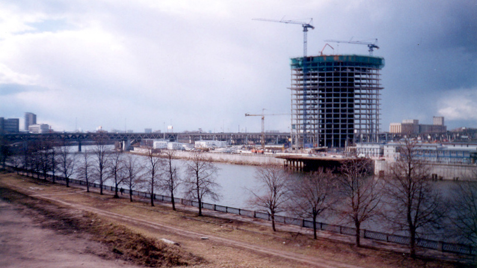
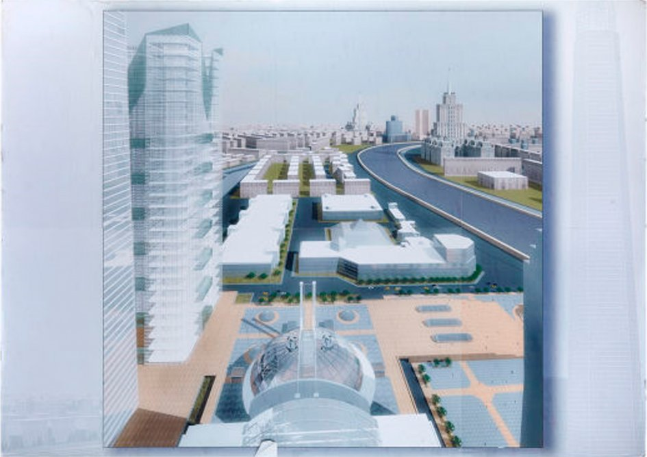
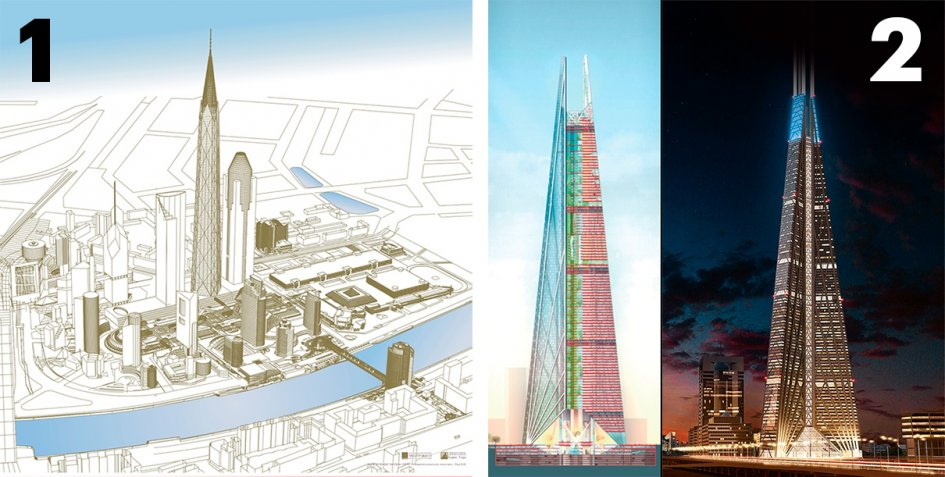
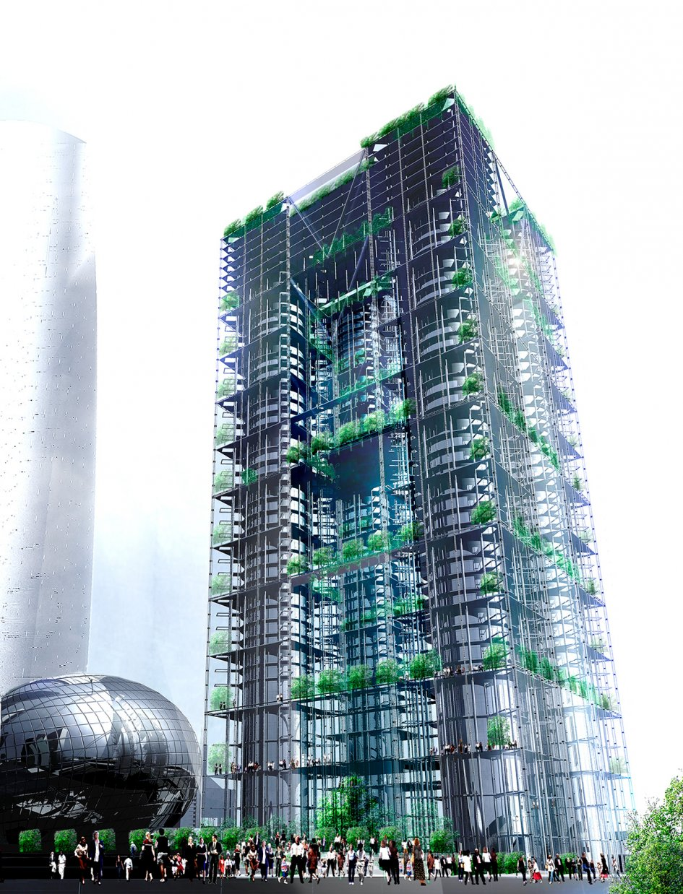

Первые планы создания в Москве бизнес-квартала международного образца появились в 1991 году. Инициатором идеи развития территории высотной застройки являлся архитектор Борис Иванович Тхор, который обратился к столичному мэру Юрию Михайловичу Лужкову с предложением построить в Москве небоскрёбы международного делового центра.
Архитектор Борис Тхор задумал новый деловой квартал, не хуже La Defense в Париже или Уолл-Стрит в Нью-Йорке
Задолго до строительства «Сити» на этом месте были каменоломни, карьеры, склады и промзоны. Здесь не было ни кафе, ни столовых, ни общественного транспорта. Даже таксисты не знали, как сюда подъехать.

В 1996 году началось строительство первой башни Москва Сити (Башня 2000) и моста Багратион. Оба проекта, как и первоначальную концепцию ММДЦ, разработал архитектор Борис Тхор (Все дальнейшие постройки в Сити уже не учитывали первоначальные планы комплексного развития района, предложенные Б.Тхором).
В 1997 году сдан в эксплуатацию торгово-пешеходный мост «Багратион». Открытие моста состоялось в сентябре 1997 года, приурочено к 850-летию Москвы. Результат совместной работы архитектора Бориса Тхора и конструктора Владимира Трауша. Мост - получил свое название в честь главнокомандующего 2-й Западной армией в начале войны 1812 года Петра Багратиона.

Строительство Башни-2000 приостанавливается, в связи со смертью руководителя фонда Станислава Шаталина (март 1997 года). Только к 2001 году было завершено строительство Башни 2000 и здание сдано в эксплуатацию.

Строительство Московского Международного Делового Центра идет до сих пор.
Архитекторы предложили разбить деловой центр на 22 большие зоны с парком, подземной парковкой и транспортной магистралью, которая заканчивалась стоянками у каждой из башен.
Главным структурным элементом «Москва-Сити», по мнению Тхора, должна была стать пойма Москвы-реки. Здания ближе к набережной могли бы открывать вид на воду для людей, которые живут и работают на верхних этажах небоскребов второй линии. Башни предполагалось построить буквой U вокруг зеленой общественной зоны.
Комплекс-ядро
Позднее концепция центра ММДЦ изменилась, и вместо парка архитектор Майнхард фон Геркан предложил построить комплекс-ядро.

По проекту он представлял собой стеклянно-бетонный купол с очертаниями материков и световой проекцией смены дня и ночи. Внутри архитектор запроектировал девять этажей с кинозалом, ресторанами и музеями.
Башня «Россия»
Высотность небоскребов в «Москва-Сити» должна была нарастать по спирали и заканчиваться башней «Россия» — самой высокой в Европе. По версии Тхора, она предполагалась простой околоцилиндрической формы и золотистого цвета. Своим внешним видом небоскреб отсылал к традиционным для русского зодчества колокольням. По задумке архитектора, в башне высотой 600 м могли одновременно находиться до 25 тыс. человек.

Другую концепцию башни «Россия» разработал британский архитектор Норман Фостер. Согласно его задумке, башня состояла из трех конусов, объединенных в пирамиду общим «хребтом» — такая конструкция давала высотке максимальную устойчивость. Высота небоскреба по проекту увеличилась до 612 м (со шпилем — до 744,5 м), общая площадь — до 500 тыс. кв. м. На вершине была запланирована смотровая площадка с кафе. Фостер надеялся сделать «Россию» высокоэкологичной, с применением технологий переработки энергии и сбора воды из осадков. К сожалению, экономические обстоятельства не позволили инвестору осуществить строительство небоскреба.
Мэрия Москвы
В 2002 году было принято решение о создании в ММДЦ правительственного квартала. Победителями архитектурного конкурса на проект здания мэрии Москвы стали Антон Нагавицын и Михаил Хазанов. Проектная высота небоскреба составила 72 этажа, или 308,4 м.

Предполагалось простроить строгую квадратную башню с озелененными поясами и крышей в виде буквы М. Изначально архитекторы запланировали сделать ее в строгой однотонной цветовой гамме, однако по просьбе экс-мэра столицы крыша на плане была перекрашена в красный цвет. В 2008 году проект заморозили.
«Миракс-сад»
В 2008 году компания «Миракс-Групп» Сергея Полонского провела архитектурный конкурс на реставрацию набережной «Москва-Сити». Победителем конкурса стала архитектурная студия Михаила Асадова, которая спроектировала зеленое общественное пространство с жилыми виллами и многофункциональным рекреационным комплексом. Проект получил название «Миракс-сад».
×

Новая набережная включала в себя пешеходную зону, входную группу станции метро, автомобильную развязку, причал для яхт и вертолетную площадку. Также здесь предполагалось построить МФЦ с торговым центром, ресторанами, подземной парковкой и прогулочным парком на кровле. Визуальной доминантой обновленной набережной должен был стать стеклянный многоцветный транспортно-жилой мост. Внутри моста проходила бы линия монорельса и располагались двухуровневные жилые виллы с зелеными двориками.
Триумфальная арка
После победы в конкурсе «Миракс» предложил студии Асадова придумать проект застройки двух соседних с набережной участков. Архитекторы посчитали, что строить очередные башни нельзя, так как они потеряются на фоне остальных небоскребов «Москва-Сити». Вместо этого было решено объединить участки, построив на них единую конструкцию в форме арки.
×

По задумке архитекторов, силуэт арки, принципиально новый для ММДЦ, отсылал к московской Триумфальной арке. В необычном здании высотой 280 м предполагалось разместить 500–600 тыс. кв. м площади. Конструкционные решения прорабатывались вместе с главным архитектором «Москва-Сити» Владимиром Травушем.
«Иван Великий»
В процессе архитектурных изысканий арка превратилась в огромную башню, по проектной высоте на 100 м опережавшую «Россию» авторства Нормана Фостера. Небоскреб имел две опоры, по одной на обоих участках, которые соединялись на высоте 410 м. Между опорами располагались бы горизонтальные «этажи жесткости» с озеленением.
×

Проект получил название «Иван Великий» в честь знаменитой колокольни в Кремле: до 1952 года она считалась самым высоким зданием в Москве. Новая башня должна была повторить судьбу колокольни, надолго став архитектурной доминантой столицы.
Крылья бабочки
Позже от идеи гигантской башни Асадову пришлось отказаться. Вместо этого архитекторы бюро Асадова пришли к двум зеркально симметричным парам высоток на 160 м и 200 м, напоминающим крылья бабочки.
×

Фасады предполагалось покрыть цветной узорной сеткой, отсылающей к мосту «Миракс-сада». Крыша и свободные площади участка собирались озеленить, что также перекликалось бы с прогулочным пространством новой набережной.
Парламент-центр
Помимо проекта для «Миракс Групп», Асадов разработал проект возведения на территории «Москва-Сити» нового здания для Федерального собрания России. В этом проекте предполагалось задействовать уже построенные подземные сооружения замороженного небоскреба для мэрии.
×

Первые шесть этажей архитекторы отводили под парламентскую библиотеку. Авторы считали это символичным: основанием для места работы депутатов и сенаторов стало бы хранилище знаний и законов. Над книгохранилищем возвышаются две параллельные «стенки» из этажей, в одной из которых заседает преимущественно Государственная дума, а в другой — Совет Федерации. Венчает здание трехэтажная перемычка, в которой расположены аппараты обеих палат. В нише, образованной «стенками», по проекту расположены три зала — по одному на каждую палату и один общий.
Аквапарк
Среди прочих отвергнутых проектов на территории «Москва-Сити» присутствовала идея создания аквапарка. Он должен был войти в состав делового комплекса «Империя». Расчетная стоимость застройки участка площадью 1,74 га составила $470 млн, из них на строительство аквапарка предполагалось потратить примерно $120 млн.
×

Первую концепцию аквапарка разработала российский архитектор Инна Ройтбург. С 2002 года проектированием аквапарка в ММДЦ занималось архитектурное бюро итальянца Джованни Коррадетти.
«Юрий Долгорукий»
Другим знаменитым зарубежным архитектором, проектировавшим небоскребы для «Москва-Сити», стала Заха Хадид. Она предложила построить в деловом центре гостинично-выставочный комплекс из двух овальных башен высотой 56 и 50 этажей, соединенных стеклянными мостиками, и горизонтального павильона.
×

Восточную башню и пентхаус западной планировалось полностью отдать под жилые апартаменты. В западной башне львиная доля площадей отводилась под гостиничные номера. В горизонтальном строении предполагалось разместить выставочное пространство, общественную зону с кафе, три малых конференц-зала и один большой на 1,5 тыс. мест. Работы по строительству должны были стартовать в 2016 году, но пока так и не начались.